'다산책길' 무슨 뜻인가요?
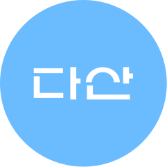
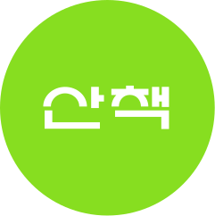
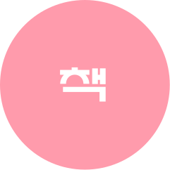
다산책길의 아이덴티티가 궁금해요!
기본형 BI
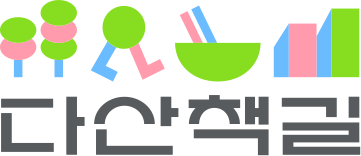기본형 BI + 태그라인 조합
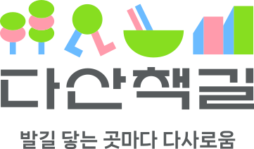아이콘
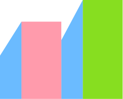
현대적이고 정돈된
다산책길의 도시 풍경을 표현합니다.
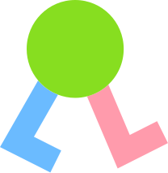
문화가 어우러진 길 속 일상의 여유를 누리는
다산책길의 핵심 가치를 나타냅니다.
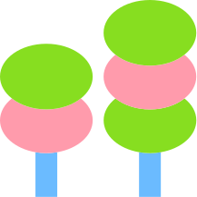
거리를 싱그럽게 감싸고 있는 자연과
다산책길의 포근함을 보여줍니다.
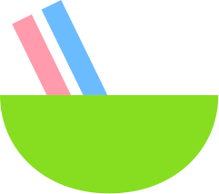
맛과 여유를 함께 즐길 수 있는
다산책길의 다채로운 상점들을 상징합니다.
다산책길 친구들을 소개합니다!
다산책길 캐릭터
 다니
다니
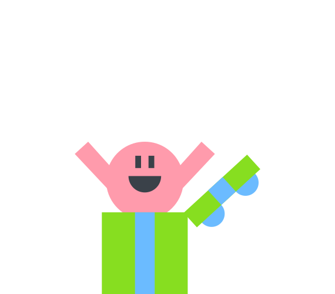
사니
 채기
채기
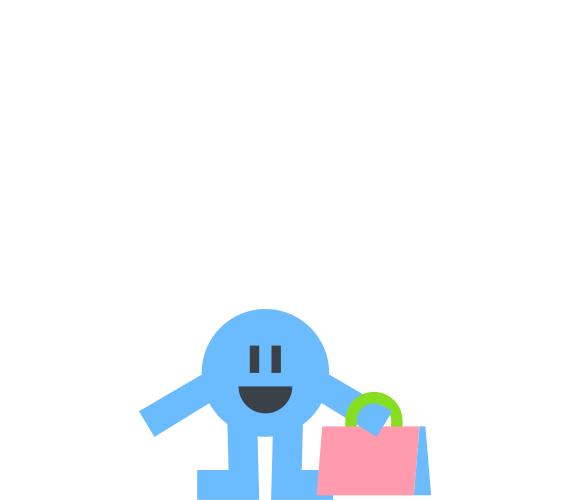
기리
4명의 다산책길 친구들은 귀엽고 친근하게 다산책길을 밝히고 있습니다.
남양주시 다산동의 약 130개 이상의 업체가 모인 골목형 상권으로, 지역 상권 활성화와 시민을 위해 다양한 문화 행사를 주관합니다.